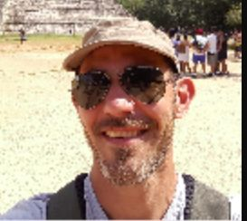
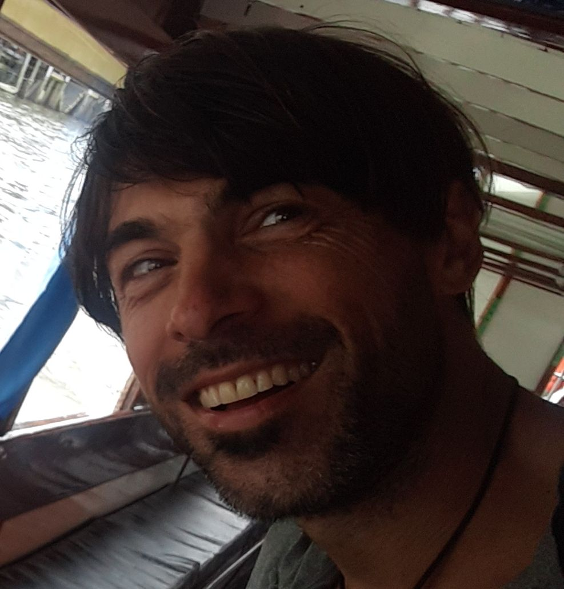

Reverdeciendo el Pedemonte en Comunidad
Un curso de introducción al Diseño Regenerativo que une sabiduría ancestral, ecología profunda y tecnología de vanguardia.
¡Inicia AGOSTO 2025!
Nuestro Propósito
La permacultura y la inteligencia artificial pueden parecer dos caminos distintos, pero cuando se encuentran, nace algo poderoso: una forma de pensar, diseñar y vivir que une sabiduría ancestral y tecnología de vanguardia, al servicio del bien común, la regeneración del planeta y la evolución de la conciencia.
Este curso propone una experiencia transformadora, donde vas a aprender a observar la naturaleza, diseñar sistemas vivos, colaborar con otras personas y utilizar herramientas de IA como una aliada en el proceso de diseño regenerativo. Incluye actividades prácticas de Ecología Profunda.
Porque creemos que otro mundo no sólo es posible: ¡ya lo estamos construyendo!
Este curso no es sólo una formación: es un llamado. Una propuesta para aprender a regenerar junt@s la Tierra, los vínculos, nuestras formas de habitar. La inteligencia artificial, lejos de ser un enemigo, puede ser una herramienta colaborativa que facilite el proceso de diseño y puesta en funcionamiento de nuestros sistemas vivos. Y la Permacultura nos guía en la búsqueda del equilibrio, la paz y la abundancia compartida.
Tres Pilares para un Futuro Regenerativo
Este curso es una experiencia transformadora que integra tres grandes campos de conocimiento y acción.
Permacultura
Aprende a observar y diseñar sistemas vivos, productivos y resilientes, imitando los patrones de la naturaleza para crear abundancia compartida.
Inteligencia Artificial
Descubrí cómo usar la IA como una potente aliada para analizar y optimizar tus diseños ecológicos y regenerativos.
Ecología Profunda
Participá en prácticas que nos reconectan con la Tierra y la red de la vida, fomentando una conciencia de interdependencia y cuidado.
El Viaje Formativo
Explorá nuestro itinerario de encuentros, un camino práctico y teórico para activar tu poder creador. Haz clic en cada módulo para ver los detalles.
Conocé a los Facilitadores
Un equipo de profesionales apasionados por la regeneración.
Ing. Leandro Mastrantonio
Diseño hidrológico KeyLine y análisis de suelo.
Ing. Celina Di Cenzi
Paisajismo. Hidrología. Diseño y Zonificación.
Ing. Hugo Oros (Kosmi)
Introducción a la Permacultura y Ecología Profunda.
Inversión y Detalles
Toda la información que necesitás para sumarte.
Intercambio Sugerido
- 🎟️Charla Informativa (17/Ago) Gratuito y abierto a la comunidad.
- 💸Módulo I Agosto: $15.000 incluye 5 arbolitos
- 💸Módulo II Septiembre: $35.000
- 🎉Módulo III Octubre: $20.000
- 🎉Módulo IV Noviembre: Gratuito
Información Adicional
- 👨👩👧👦Promos, Becas e Intercambios: consultanos por whatsapp 261-2417038
- 🧺Comida: Almuerzo y mate a la canasta para compartir.
- ✅Cupos limitados: Tu lugar se asegura con el 50% del valor del módulo.